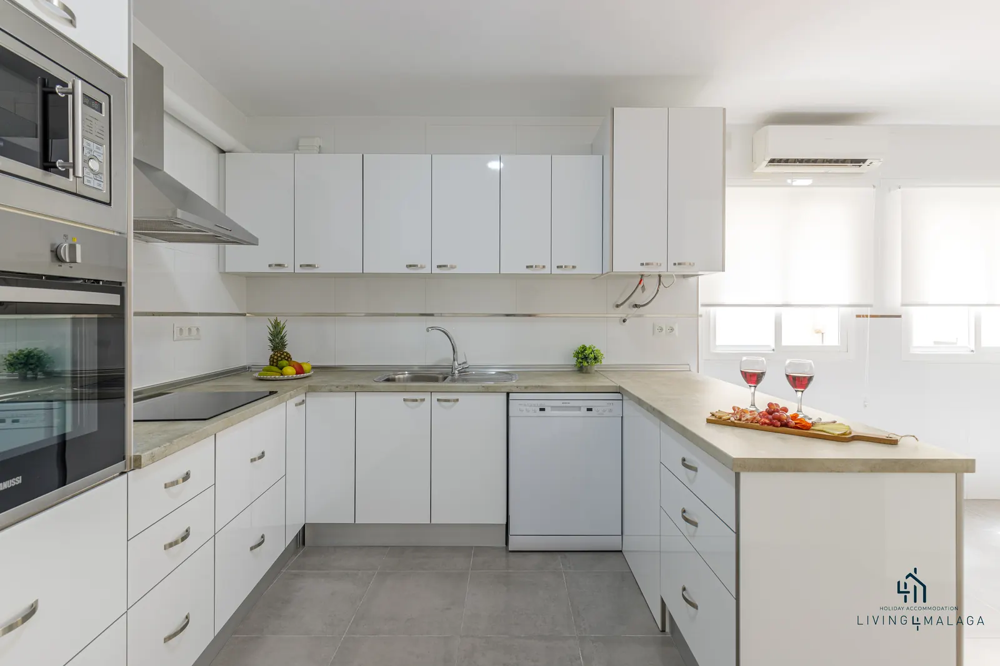

Urban Chic 2A
El centro de Málaga, a pie
Para dos, o hasta cuatro
- dormitorio con baño en suite;
- sofá cama doble en el salón.
- 4 huéspedes
- Balcón francés
- 5,0 · Airbnb · 3 opiniones

Para ver el alumbrado y volver a casa andando
El alumbrado de Navidad de Calle Larios está a 6 minutos a pie de Urban Chic, en Calle Hoyo de Esparteros 9. Según idealista (5/11/2026), en 2026 las luces se encenderían el viernes 27 de noviembre a las 19:00; el Ayuntamiento no lo ha confirmado. En 2025 el acto de encendido empezó el viernes 28 de noviembre a las 18:30, y el espectáculo de luz y música tuvo tres pases diarios hasta el 4 de enero, a las 18:30, 20:30 y 22:00; el 24 y el 31 de diciembre hubo luces, pero sin música.
Sin comisiones de intermediarios
Elige apartamento y reserva en la web oficial, living4malaga.com.
Revisado el
Minutos a pie desde Hoyo de Esparteros 9, con lo que hubo en la Navidad de 2025-26:
El itinerario de la Cabalgata de Reyes del 5 de enero de 2026 pasaba por la calle Atarazanas, la del mercado, y por Calle Puerta del Mar.
El espectáculo de luz y música «Natividad de luz», con pases a las 18:30, 20:30 y 22:00 hasta el 4 de enero. El 24 y el 31 de diciembre, luces sin música.
Conciertos «Música en Navidad» del 20 al 29 de diciembre (salvo el 24) y, en Nochevieja, campanadas con reparto gratuito de uvas y cotillón de 21:30 a 23:45 o hasta agotar existencias.
Videomapping «El pescador de sueños» en la torre, a las 19:00, 20:30 y 22:00, hasta el 4 de enero (salvo el 24 y el 31 de diciembre).
El paseo del puerto, para caminar entre pase y pase.
En 2025 el acto empezó el viernes 28 de noviembre a las 18:30. Según idealista (artículo del 5/11/2026), el encendido sería el viernes 27 de noviembre a las 19:00; el Ayuntamiento no lo ha confirmado.
En 2025-26 el alumbrado estuvo encendido de 18:30 a 00:00 de domingo a miércoles, hasta las 02:00 de jueves a sábado y en vísperas de festivo, y hasta las 06:00 la noche del 24 y la del 31 de diciembre.
En 2025-26 se pudo visitar gratis desde su inauguración, el 5 de diciembre por la tarde, hasta el 6 de enero, en el Ayuntamiento: de 10:00 a 14:00 y de 17:00 a 21:00 (el 8 de diciembre, de 10:00 a 14:00 y de 18:30 a 21:00), con más de 400 figuras.
El 22 de diciembre de 2025 hubo una fiesta infantil con títeres en la Plaza Enrique García Herrera (Camas), donde estaba también el buzón real del distrito Centro. Del 2 al 4 de enero, emisario y cartero real en la Plaza de la Constitución, de 19:00 a 20:00.
En Andalucía, el lunes 7 (traslado del 6), el martes 8 y el viernes 25 de diciembre de 2026, y el viernes 1 y el miércoles 6 de enero de 2027.
Fuentes: comunicados del Ayuntamiento de Málaga de 2025-26, idealista (5/11/2026) y BOJA. Las fechas y horarios de 2026-27 pueden cambiar. Encendido 2025 · Pases 2025 · Programa de Fiestas · Belén Municipal · Cabalgata 2026 · Previsión 2026 (idealista) · Festivos 2026 (BOJA) · Festivos 2027 (BOJA)
2A y 3B tienen balcón francés a la plaza de Hoyo de Esparteros, como todos los apartamentos del edificio salvo el ático, que tiene terraza.
El centro de Málaga, a pie
Para dos, o hasta cuatro
Para viajar con amigos
Para seis, con dos baños
Aire libre sin salir de casa
Para seis, con cocina grande
En 2025 la Policía Local planificó más de 1.300 servicios extraordinarios para toda la Navidad, entre ellos el control de la afluencia en Calle Larios y su entorno.
En 2025, durante los pases de Calle Larios, podía haber cortes puntuales del tráfico privado en la Alameda Principal o el Paseo del Parque.
La estación Málaga-Centro Alameda, con el tren C1 al aeropuerto, está a 6 minutos a pie, y el aparcamiento público de Camas, a 4.
Todos los apartamentos tienen calefacción y aire acondicionado.
Fuente: dispositivo de Navidad 2025 del Ayuntamiento de Málaga. Dispositivo de Navidad 2025



Según idealista (artículo del 5/11/2026), el encendido sería el viernes 27 de noviembre a las 19:00; el Ayuntamiento no lo ha confirmado. En 2025 el acto de encendido empezó el viernes 28 de noviembre a las 18:30.
Calle Larios está a 6 minutos a pie de Hoyo de Esparteros 9, la Plaza de la Constitución, a 9, y la Catedral, a 9.
En la Navidad de 2025-26 hubo tres pases diarios hasta el 4 de enero, a las 18:30, 20:30 y 22:00. El 24 y el 31 de diciembre las luces estuvieron encendidas, pero sin música. Los horarios de 2026 aún no están publicados.
El ático, Urban Penthouse Terrace: seis plazas, cocina grande, mesa para seis y lavavajillas, el único del edificio. Urban Chic 3B también es para seis, con dos baños.
Sí, el edificio tiene ascensor. El ático está en la cuarta planta.
En Andalucía, el 7, el 8 y el 25 de diciembre de 2026, y el 1 y el 6 de enero de 2027.
La tarifa de la web oficial no lleva comisiones de intermediarios; la diferencia con otras plataformas cambia según la fecha.
Reserva en la web oficial, sin comisiones de intermediarios. Consulta las fechas libres: